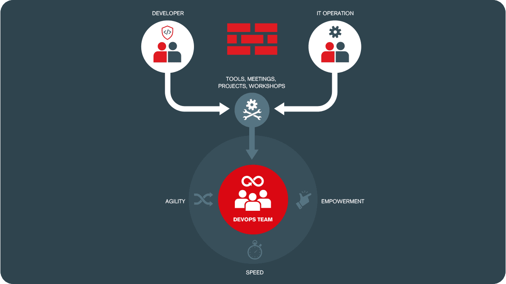

DevOps ist eine Abkürzung für "Development" (Entwicklung) und "Operations" (Betrieb). Es handelt sich um eine Bewegung in der Softwareentwicklung und im IT-Betrieb, die darauf abzielt, die Zusammenarbeit und Kommunikation zwischen Entwicklern und IT-Betriebsteams zu verbessern. Im wesentlichen versucht man die Lücke zwischen Entwicklern und Betriebsteamy zu schliessen, um schnellere, bessere und effektivere Lösungen erstellen zu können.
DevOps versucht, Herausforderungen wie Silos zwischen Teams, langsame Bereitstellungsprozesse und mangelnde Transparenz zu überwinden.
Das Ziel ist es, die Zusammenarbeit zu fördern um ein noch produktiveres Umfeld schaffen zu können. Ausserdem sollen durch fehlerhafte Kommunikation und fehlender Tranzparenz verursachte Fehler minimiert werden.
Die DevOps-Philosophie betont Automatisierung, kontinuierliche Integration und Bereitstellung, Testautomatisierung, Monitoring und Feedbackschleifen.
Hier sind wichtige Toolfamilien für die verschiedenen Schritte des DevOps-Prozesses:
Code-Tools unterstützen Entwickler bei der Entwicklung und Verwaltung von Quellcode.
Test-Tools unterstützen Entwickler bei der Qualitätssicherung und dem Testen von Software.
Build- und Release-Tools unterstützen bei der Erstellung und Veröffentlichung von Software.
Deploy-Tools unterstützen bei der Bereitstellung von Software in verschiedenen Umgebungen.
Operate- und Monitoring-Tools unterstützen bei der Betriebsführung und Überwachung von Software.